Somewhere in southeastern Africa lies a lake with roughly one thousand species of fish — the highest count of any lake on Earth, and about thirty percent of every cichlid species known to science. The lake is Lake Malawi, and the country wrapped around it answers to one of the most affectionate nicknames on the map: the Warm Heart of Africa.
The material reviewed in this article is a visual presentation titled The Warm Heart of Africa, subtitled “An elemental journey through the majestic landscapes, unprecedented biodiversity, and legendary hospitality of Malawi.” The deck was assembled with Gemini Notebook, an AI-powered tool, and it reads like a compact masterclass in travel writing — precise numbers, vivid metaphors, and elegant sentence patterns. Every line of the AI-generated text is quoted below and unpacked for English learners, the key vocabulary is drilled with interactive flashcards, and a quiz at the end measures how much of the journey has stayed with the reader.
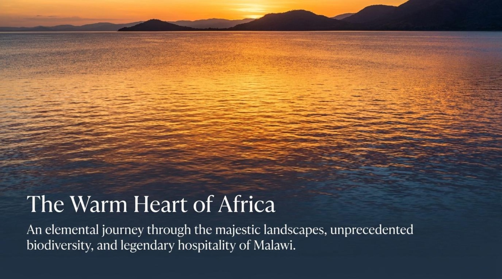
📖 Content and Context: Scenes from the Warm Heart
A nickname with a birthday
Every nickname ages, and most of them fade. This one turned into an official identity. The deck devotes an early scene to the story under the headline “A national identity built on radical hospitality,” and explains that “While Malawi boasts lush mountains and shimmering lakes, its defining characteristic is its people. Community serves as the bedrock of Malawian culture, with a deeply ingrained tradition of neighbors helping neighbors. This distinct cultural generosity is what makes the journey truly worthwhile.”
The scene then lays out three numbered facts. The moniker: The Warm Heart of Africa. The origin: “Coined in 1973 by Irish photographer and tourism consultant Frank Johnston.” The legacy: “Over fifty years later, it remains the official and spiritual identifier of the nation.” The AI-generated text models a classic travel-writing move — it lists the expected attractions first and then overturns them with a human claim. Pay attention to the pivot word while at the start of the sentence, which signals accept this, but now look at something more important.
💡 Practical advice: borrow the template for the next conversation about a home country: “While [place] boasts [mountains, food, landmarks], its defining characteristic is ….” One sentence, two clauses, and an instant essay opening.
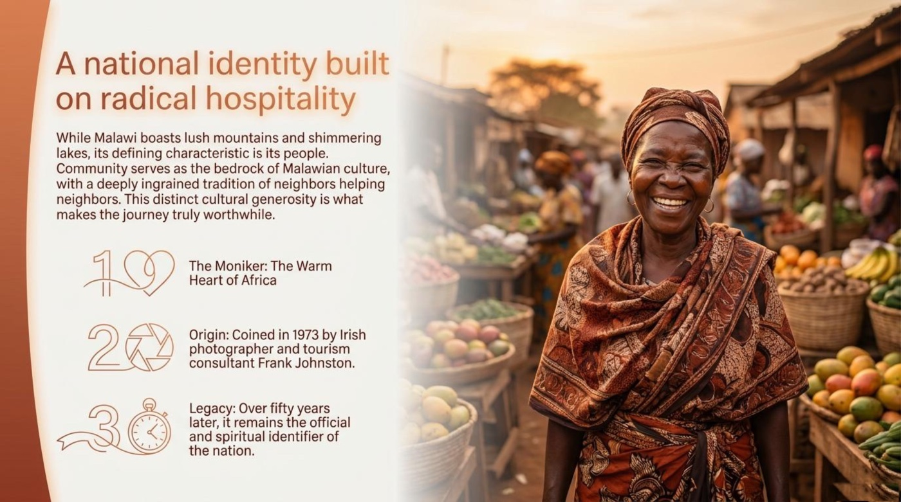
Three elemental forces
The deck organizes the whole country into a triad under the headline “Three elemental forces shape the Malawian landscape.” The aquatic force comes first: “The Great Rift Valley harbors Lake Malawi, a globally crucial freshwater biome defining the eastern border.” The alpine force follows: “Soaring granite massifs and rolling whaleback grasslands create a cool, European-like climate high above the rift.” The third force lives at the bottom of the map: “Lush, low-lying river plains and marshes host a dramatic resurgence of Africa’s iconic megafauna.”
📌 Language note: watch the verb chain — shape, harbors, create, host — four active verbs in three sentences. The rule of three is one of the most reliable structures in English description, and it works for essays, presentations, and interview answers alike.
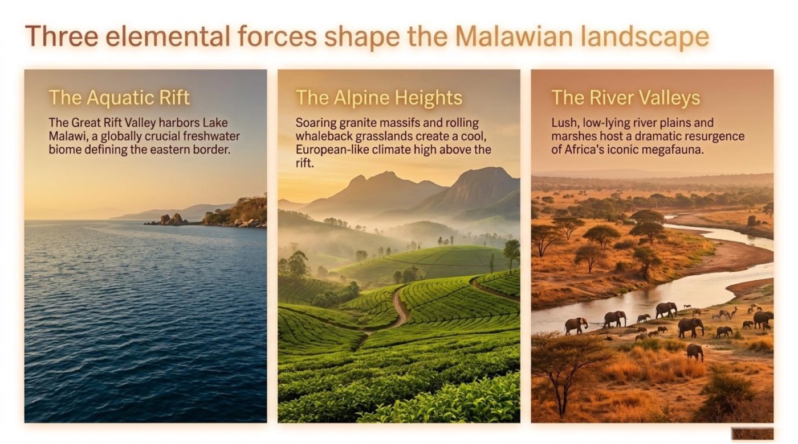
The world’s first freshwater national park
The journey then turns to protection. “Designated as a UNESCO World Heritage Site in 1984, Lake Malawi National Park was established primarily to preserve a pristine sample of the lake’s unparalleled biome and rocky shores.” The numbers carry the authority: 94.1 km² of protected area including waters within 100 meters of the shoreline, 13 islands plus mainland portions of the Cape Maclear Peninsula, and 25,000 people who “live in five enclave villages adjacent to park boundaries, subsisting on fishing and farming.” The word subsisting reminds the reader that livelihood, not leisure, defines the villages’ relationship with the park.
💡 Practical advice: when retelling an article, convert its numbers into spoken sentences — “The park covers 94.1 square kilometers and includes 13 islands.” Numbers become fluent only through repetition aloud.
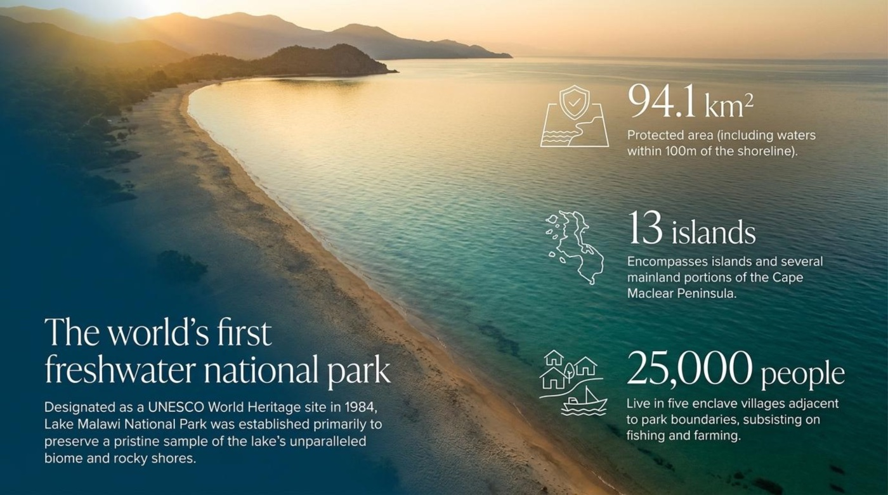
Malawi by the numbers. The deck’s key figures, gathered in one place before the deep water of the story.
An evolutionary crucible
A later scene delivers the deck’s scientific heart: “An evolutionary crucible rivaling the Galapagos.” The explanation follows: “Isolated over millennia, Lake Malawi’s fish have undergone spectacular adaptive radiation. The lake is a separate bio-geographical province, holding immense scientific value comparable to Darwin’s finches or Hawaii’s honeycreepers.” The statistics appear in four rows: a total diversity of ~1,000 estimated fish species, “the highest of any lake in the world”; a global share of 30% of all known cichlid species; the Mbuna, “a fascinating rock-dwelling cichlid family”; and an endemism rate of 99% — “All but 5 of the over 400 species of Mbuna are completely endemic to Lake Malawi.”
📌 Language note: notice the scientific register — undergo, comparable to, hold value. Verbs like undergo let a noun such as radiation or change do the heavy lifting, a pattern worth copying in academic and professional English.
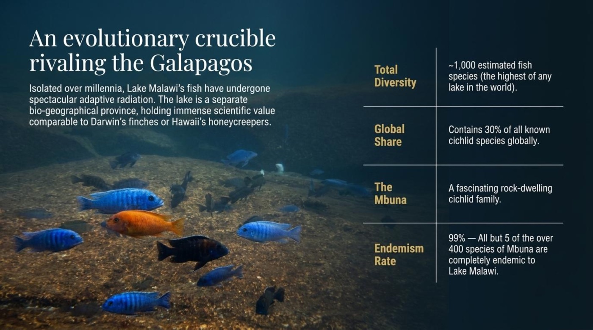
Granite titans
The next scene lifts the eyes to the sky: “Granite titans rising from the Phalombe Plains.” The text explains that “The Mulanje Massif is a massive wilderness plateau of syenite granite that dominates the southern Malawian skyline. It stands as a towering monument to the country’s tectonic origins.” The diagram traces the climb from a base at near sea level up to Sapitwa Peak at 3,000 meters (10,000 feet) — “The highest peak in both Malawi and the whole of central Africa.”
💡 Practical advice: superlatives stick when they are doubled — “in both Malawi and the whole of central Africa.” The pattern in both X and Y turns a plain fact into a memorable claim.
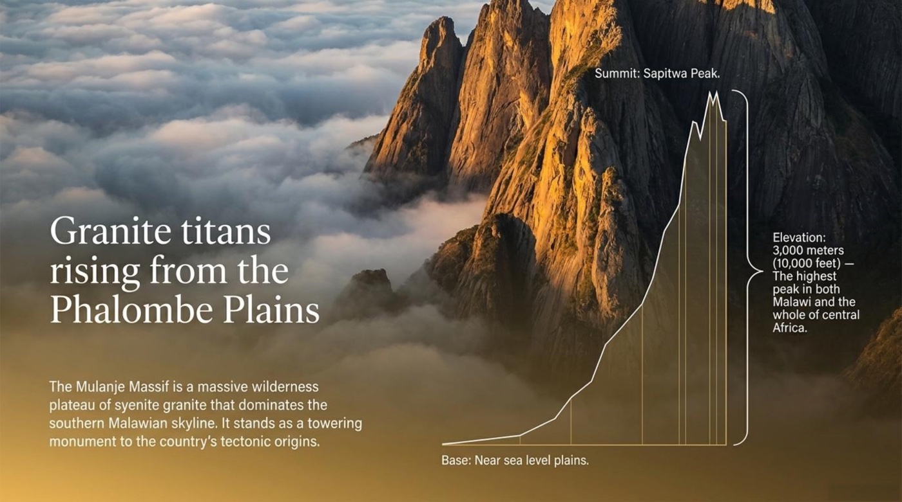
The misty highlands of the north and south
Higher still, the deck pairs two plateaus in a neat parallel. In the north stands Nyika Plateau: “A unique rolling whaleback grassland at 2,000 meters,” with a climate that is “cool and misty, feeling almost European,” and wildlife that includes “roan antelopes, grazing zebras, and leopards roaming among wildflowers.” In the south waits Zomba Plateau: “a great, gently undulating slab of a mountain accessible by road,” its ecology made of “vast tracts of cedar, pine, and cypress crisscrossed by clear streams and still lakes.” The mirroring structure — north against south, grassland against forest — shows how parallel description creates rhythm without repetition.
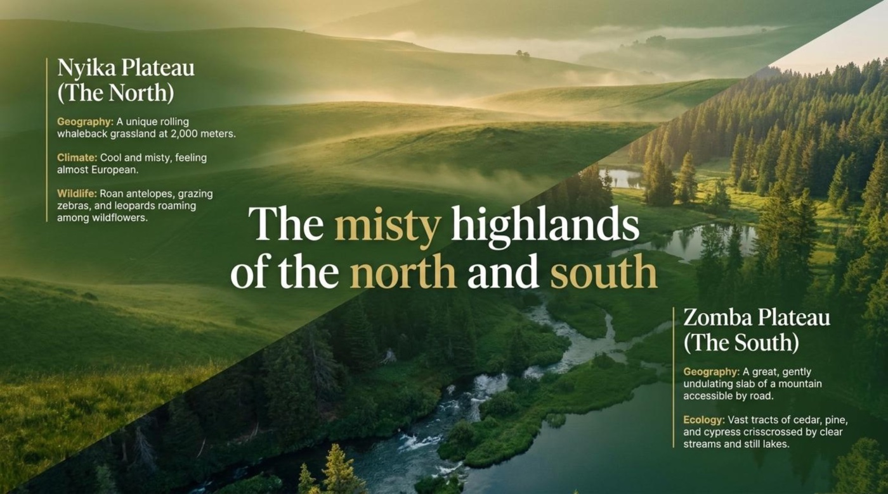
The dramatic restoration of the Shire River Valley
The story then descends to the river. “Liwonde National Park represents one of the most incredible wildlife translocation and reintroduction success stories in Southern Africa. Once heavily poached, it is now a thriving 584 km² wetland and dry-savanna sanctuary.” The timeline walks through the arc in three acts: 2015 (The Crisis) — “The park was plagued by tens of thousands of wire snares and peak levels of human-wildlife conflict.” Intervention — “Massive restoration efforts, snare removal, and strategic wildlife translocation.” Present (The Resurgence) — “Now a secure haven for the Big 5 (elephant, buffalo, lion, leopard, rhino), alongside cheetahs, sable antelopes, and dense hippo populations.”
📌 Language note: the sentence pattern “Once X, now Y” compresses an entire transformation into two beats. It works far beyond wildlife — “Once a nervous beginner, now a confident speaker” belongs in every learner’s toolkit, including job interviews.
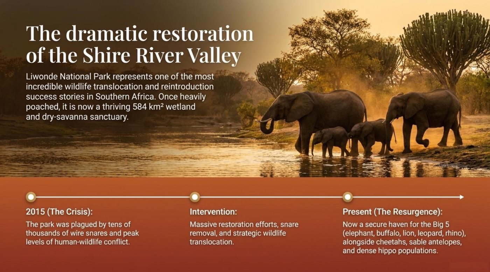
A century of cultivation in the southern highlands
The palette then changes from wildlife to agriculture: “Stretching west of Mount Mulanje, the region of Thyolo transforms the rugged African landscape into vast, neatly kept gardens. Tea has been cultivated here since 1908, creating an undulating sea of vibrant green that blankets the rolling hills and defines the region’s agricultural heritage and local economy.” The grammar deserves attention — has been cultivated since 1908 is the present perfect passive, the natural tense for anything that started in the past and continues into the present.
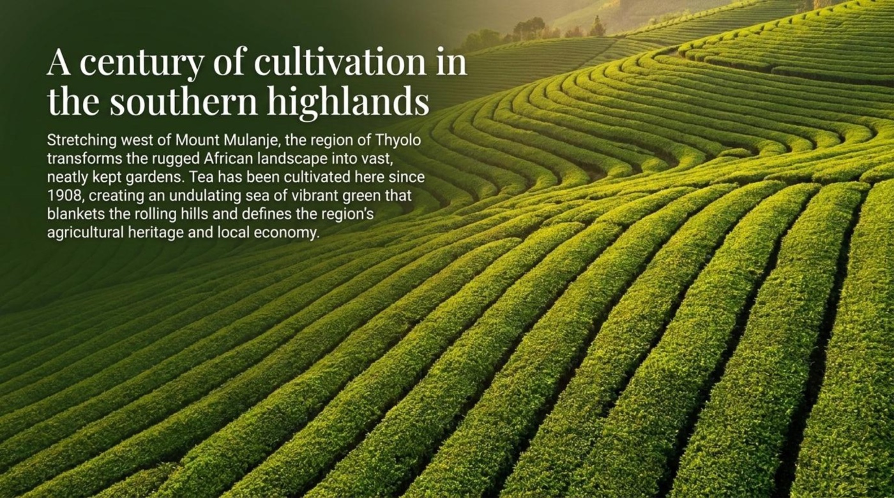
An ancient record etched in stone
Deepest of all, the deck reaches back millennia: “Malawi’s cultural heritage stretches back millennia. The Chongoni Rock Art Area, a UNESCO World Heritage Site located high on a central plateau, features the densest cluster of ancient rock art in central Africa.” Three labeled callouts organize the story. The Creators: “Features rare farmer rock art alongside paintings by Batwa hunter-gatherers from the late Stone Age.” The Subject: “Depicts ancient religious ceremonies, initiations, the Ngoni invasion, and the arrival of Europeans.” The Transition: “Serves as a permanent historical record of humanity’s profound transition from a foraging lifestyle to food production.” The headline-style labels — Creators, Subject, Transition — are a reusable pattern for structuring any description in English.
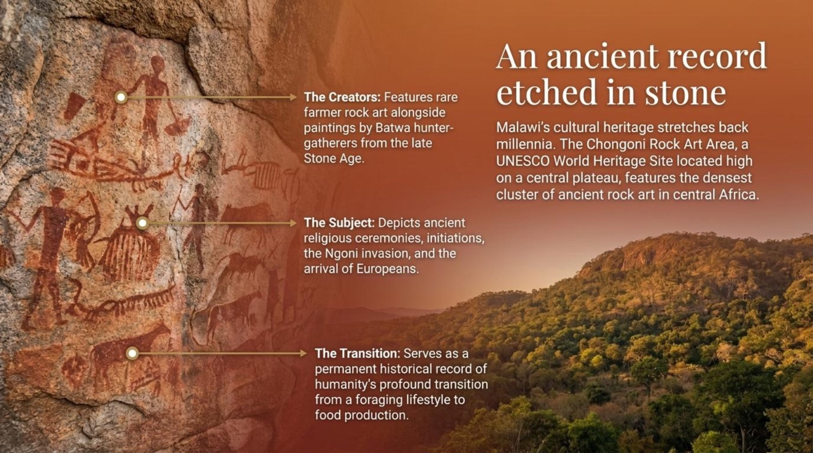
The people make the journey worthwhile
The closing scene returns to the opening thesis with the line “Its very people make the journey worthwhile,” and adds that “the true resonance of Malawi lies in its spirit.” A ring composition — the deck ends exactly where it began — is precisely what strong essays and strong presentations do, and it is a structure any learner can borrow.
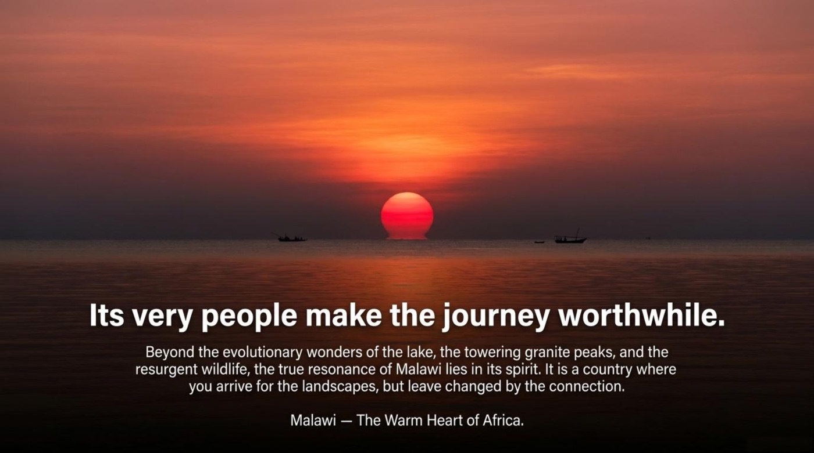
🧠 Vocabulary and Language Takeaways
The deck’s language is a gold mine of travel-writing vocabulary, and the words themselves mirror the journey: geology becomes society (bedrock), disease becomes misfortune (plagued by), and ocean waves climb into the hills (undulating). Each entry below lists the literal sense, the contextual sense, the example from the material, and the way the deck itself puts the word to work.
1. boasts (verb)
- Literal meaning: to brag — to talk about something with excessive pride.
- Figurative / contextual meaning: in travel writing, to proudly possess an impressive feature.
- Example from the material: “While Malawi boasts lush mountains and shimmering lakes, its defining characteristic is its people.” The verb lets the sentence celebrate the scenery without any hint of arrogance.
- How the material explains it: the deck places boasts right before a list of attractions — lush mountains, shimmering lakes — and then pivots to the human highlight, which shows that boasts introduces a place’s finest features rather than a person’s vanity.
2. moniker (noun)
- Literal meaning: a name, especially an informal one; a nickname.
- Figurative / contextual meaning: a title that carries identity, history, and even official weight.
- Example from the material: “The Moniker: The Warm Heart of Africa.”
- How the material explains it: the deck uses moniker as a headline and then dates the name — coined in 1973, still the nation’s “official and spiritual identifier” — which signals that this word belongs to stories about names that matter.
3. bedrock (noun)
- Literal meaning: the solid rock that lies beneath the soil.
- Figurative / contextual meaning: the base or foundation that everything else is built on.
- Example from the material: “Community serves as the bedrock of Malawian culture, with a deeply ingrained tradition of neighbors helping neighbors.”
- How the material explains it: the deck maps geology onto society — community holds the culture up exactly as bedrock holds up the land — and pairs the metaphor with ingrained to double the image of depth.
4. ingrained (adjective)
- Literal meaning: worked deep into the grain or fibers of a material, where it can no longer be washed out.
- Figurative / contextual meaning: so long-established and deep-rooted that change is nearly impossible.
- Example from the material: “…a deeply ingrained tradition of neighbors helping neighbors.”
- How the material explains it: the deck attaches the intensifier deeply, forming one of English’s most natural collocations — deeply ingrained — and applies it to a tradition, the word’s favorite kind of partner.
5. pristine (adjective)
- Literal meaning: in its original, unaltered condition; unspoiled.
- Figurative / contextual meaning: perfectly clean and untouched by human damage.
- Example from the material: “…established primarily to preserve a pristine sample of the lake’s unparalleled biome and rocky shores.”
- How the material explains it: the deck connects pristine with preserve — the reason the park exists is to keep that untouched quality intact — a classic pairing in environmental writing.
6. endemic (adjective)
- Literal meaning: from the Greek endēmos, “native” — living naturally in one particular place.
- Figurative / contextual meaning: in ecology, found nowhere else in the wild but here.
- Example from the material: “99% — All but 5 of the over 400 species of Mbuna are completely endemic to Lake Malawi.”
- How the material explains it: the deck promotes the adjective into a measurable statistic with its own labeled row, Endemism Rate, showing learners how science turns qualities into numbers.
7. plagued by (verb phrase, usually passive)
- Literal meaning: suffering from a plague — a spreading, deadly disease.
- Figurative / contextual meaning: persistently troubled, harmed, or held back by something unpleasant.
- Example from the material: “The park was plagued by tens of thousands of wire snares and peak levels of human-wildlife conflict.”
- How the material explains it: the deck reserves the phrase for the crisis point of its timeline — 2015 — so the word choice itself communicates severity before the recovery begins.
8. undulating (adjective)
- Literal meaning: moving with a smooth, wave-like up-and-down motion.
- Figurative / contextual meaning: rising and falling in gentle curves — hills, fields, dunes, whole landscapes.
- Example from the material: “…creating an undulating sea of vibrant green that blankets the rolling hills.” The deck repeats the pattern on the highlands scene: “a great, gently undulating slab of a mountain.”
- How the material explains it: by applying the same word to tea estates and to an entire mountain, the deck demonstrates the word’s range — anything that flows in soft waves qualifies.
The flashcards below add four bonus terms from the deck — crucible, haven, translocation, and resurgence — so the full set travels with the reader. ⚠️ One small caution before flipping: outside travel writing, boasts really can mean to brag, so keep the context in mind before using it about people.
🃏 Each card flips on click or tap. Keyboard users press Tab to reach a card and Enter or Space to flip it. The set rotates through five accent colors, and movement-free mode is honored throughout — the card sides simply swap without rotation.
💭 Deeper Meaning: Metaphors and Symbols
1. The heart of the nickname
A heart is the body’s furnace of emotion, and warmth is what a host offers a guest — so the nickname compresses an entire national character into two words. The deck’s interpretation is explicit: “While Malawi boasts lush mountains and shimmering lakes, its defining characteristic is its people,” and “This distinct cultural generosity is what makes the journey truly worthwhile.” The metaphor turns geography into personality: the country is described not by what it looks like, but by how it behaves toward visitors.
2. The crucible
A crucible is a heat-proof vessel in which metal melts, impurities burn away, and new alloys form. The deck applies the image to isolation: “An evolutionary crucible rivaling the Galapagos,” where “isolated over millennia, Lake Malawi’s fish have undergone spectacular adaptive radiation.” The lake becomes a laboratory in which time and separation forge species found nowhere else — a metaphor that makes an abstract scientific process feel physical, hot, and creative.
3. Granite titans
Titans were the giants of Greek myth who personified raw natural force, and the deck casts the Mulanje Massif among them: “Granite titans rising from the Phalombe Plains.” A second image completes the thought: “It stands as a towering monument to the country’s tectonic origins.” Monuments usually commemorate people; here the mountain itself is the memorial, built by the slow collision of tectonic plates. Geology turns into biography, and the reader gains a reusable phrase — a landscape can be a monument to its own history.
4. The record etched in stone
To etch is to cut lines into a hard surface, and memories that are etched are memories that never fade. The deck’s interpretation is direct: “An ancient record etched in stone,” a place that “serves as a permanent historical record of humanity’s profound transition from a foraging lifestyle to food production.” The cliff face becomes a library without books. Interestingly, the deck closes its imagery loop with water once more — the tea estates as “an undulating sea of vibrant green” — so that lake, mountain, stone, and sea together frame the country as a complete natural archive.
✅ Comprehension Check
The quiz below gathers eight questions from the material — comprehension, vocabulary in context, key numbers, and culture. Each answer brings instant feedback, a short explanation, and a running score, while the dots above the questions record the route. A row of green dots means the Warm Heart has fully transferred its warmth.
Final score
🌅 Conclusion: Arrive for the Landscapes, Leave Changed
The final scene doubles as the final lesson of the language journey: scenery vocabulary opens the door, and words about people carry the meaning home. Learners who can describe a lake, a massif, and a tea estate — and then explain why strangers smile at the market — hold the full register of travel English. The main takeaway of the deck is that a country’s finest attraction is never a place; it is always a connection.
The call to action is simple. Revisit the original presentation through the link at the bottom of this page, flip through the vocabulary cards one more time, retake the quiz until the dots run green, and then try the deck’s central pattern on home ground: describe your own country’s landscapes first, and its people second. The warm heart of any language is always the people who speak it.
📎 Lesson Files
The complete lesson presentation is available below:
- the-warm-heart-of-africa.pdf — the full presentation from the lesson (opens in a new tab).